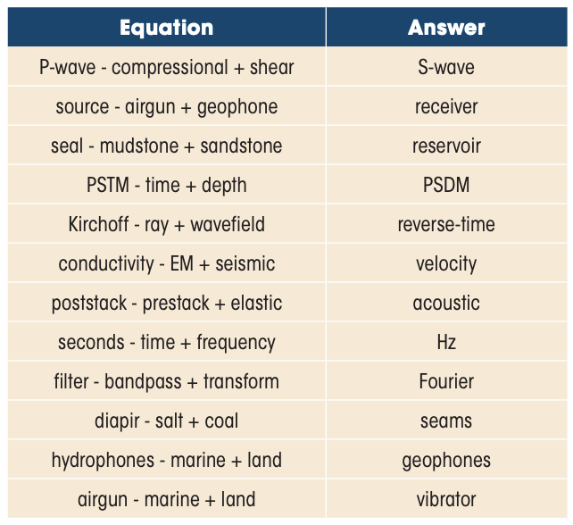
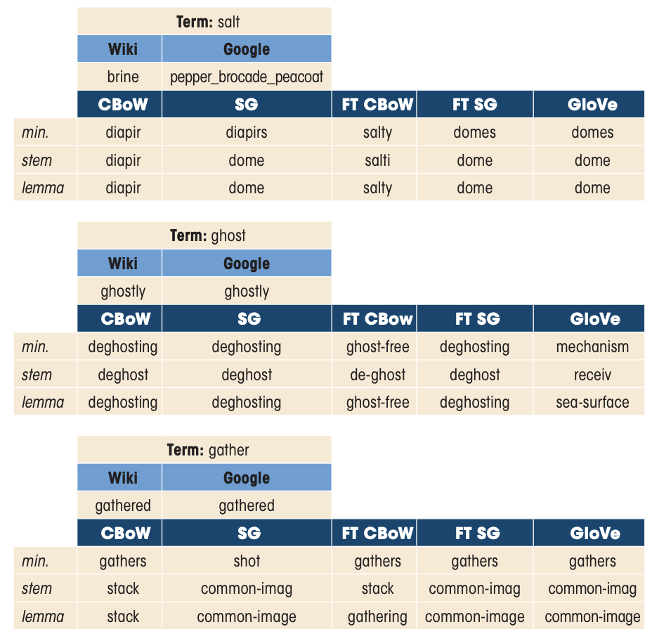

In the field of natural language processing, word embeddings are a set of techniques that
transform words from an input corpus into a low-dimensional space with the aim of capturing the
relationships between words. It is well known that such relations are highly dependent on the
context of the input corpus, which in science varies highly from field to field. In this work
we compare the performance of word embeddings pre-trained on generic text versus custom made
word embeddings trained on an extensive corpus of geoscientific papers. Numerous examples
highlight the difference in meaning and closeness of words betweeen geoscientific and generic
context. A prime example is the term ghost which has a specific definition in geophysics,
different to that of its common usage in the English language. Moreover, domain specific
analogies, such as ‘Compressional is to P-wave what shear is to... S-wave’, are investigated to
understand the extent to which the different word embeddings capture the relationship between
terms. Finally, we anticipate some use cases of word embeddings aimed at extracting key
information from documents and providing better indexing.
Theory

[IN PROGRESS]
Results
[IN PROGRESS]

Cite
If you found the paper useful, please cite it via:
Birnie, C. and Ravasi, M., 2020. What is the shear equivalent of a P-wave?
A semantic analysis of geoscientific corpi. First Break, 38(7), pp.61-67.
@article{birnie2020shear,
title={What is the shear equivalent of a P-wave? A semantic analysis of geoscientific corpi},
author={Birnie, Claire and Ravasi, Matteo},
journal={First Break},
volume={38},
number={7},
pages={61--67},
year={2020},
publisher={European Association of Geoscientists \& Engineers}
}